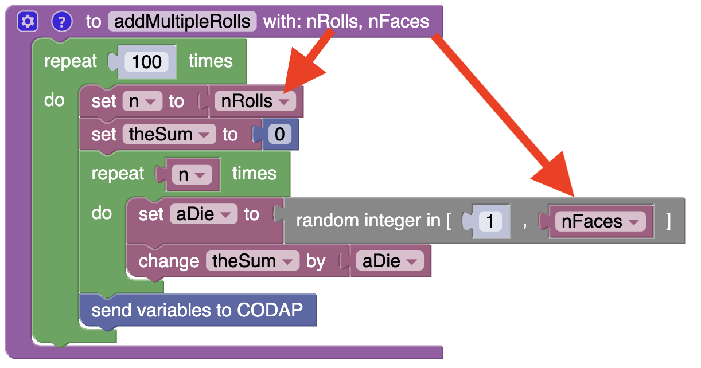

Simmer Guide
Functions in simmer
This builds directly on the n-dice chapter, so check that out if you haven’t read it.
In that chapter, we used this program to roll 42 6-sided dice and add them—100 times:
Now we will learn how to “encapsulate” that program into a single statement. We’ll define a function to do that.
- We’ll get a function definition from the Functions category in the toolbox. It’s the top item, labeled to do something. (See the illustration at right.)

- We’ll wrap that definition around the statements we want in the function (the same way we wrapped statements in loops).
- Finally, we’ll edit do something to give the function a dood name, such as “roll 6 x 42, 100 times.”
It will look like this when you’re done:

This function definition is not part of the program that simmer executes until you call it. But when you do, the actual program becomes amazingly simple and understandable.
To get the call, go back to the Functions category. Drag out the function “call” block, which has only the function’s name. It looks like this:
And that is the entire program! So the block window will have two things in it: the function definition (which is long and details) and the program that call it (which is short and more general).
In the last chapter, we also rolled 21 13-sided dice. you will put those instructions into a very similar function called roll 13 x 21, 100 times.
Your turn. Using the live example below,
- Wrap the code in a loop so you roll those 42 dice 100 times.
- Define the first (6-sided die) function as we did above
- Select the definition (just click on the “wrapper”) and copy it to the clipboard.
- Paste the definition into your workspace (now there are two copies).
- Change its name and its instructions to roll 21 13-sided dice 100 times.
- Bring two blocks out of Functions to call those two functions and hook them together
- Run the program and make a graph of the data. It should look the way it did before!
Advanced functions: using arguments
That was sweet, but as you can see, the two functions are almost identical. The loops and everything are structured the same. There are only two differences:
- The number of rolls (42 and 21) (we’ll call it
nRolls) - The number of sides of each die (6 and 13) (
nFaces)
Let’s write one function to take care of both situations. It will look like this. Notice that it is exactly like the original function except that two of the constants in the original function are now variables:

- This function has two arguments,
nRollsandnFaces(indicated by the with at the top). - It uses those two arguments in the program,
nRollsas the number of times through the inner loop.nFacesas the number of faces on the dice.
- The function repeats the rolling-and-summing bit 100 times, sending data to CODAP every time through the outer loop.
Now the actual program becomes amazingly simple and understandable. Here it is:
Setting up the arguments
How did we get those arguments?
- Click on the little gear in the function definition block. A dialog will appear.
- Drag the input name: x to the inputs bracket on the right. Do this twice; two arguments. Edit the names there. Make them
nRollsandnFaces. - Click the gear again to make the box go away.
- Drag
nRollsandnFacesout of Variables and substitite them in the appropriate places in the function definition.
Try it in the live example below (be sure to give the function a name, and don’t forget the loop to repeat 100 times!):
Once you have a function defined, it takes up a lot of space. If you’re confident it’s the way you want it:
- Right-click on the function definition.
- Choose Collapse block.
This works with any block! Try it!